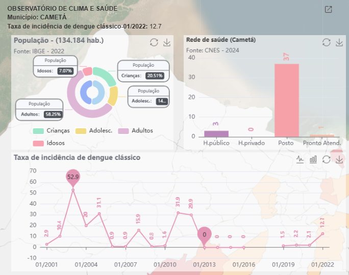
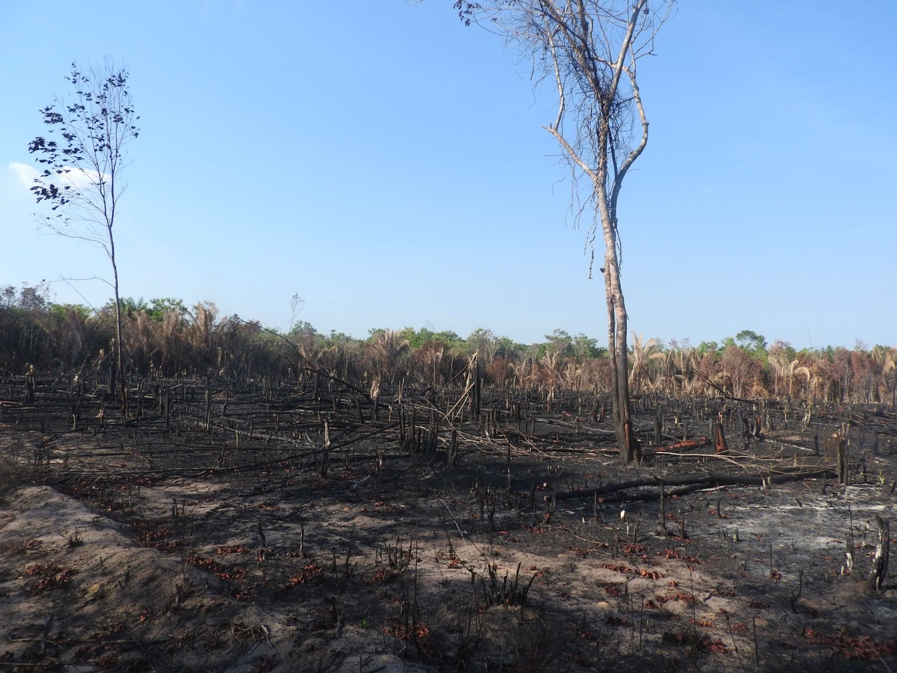

As mudanças climáticas, tanto no Brasil quanto em outras partes do mundo, têm como uma das suas principais consequências o avanço das doenças tropicais, como a dengue, a doença de Chagas e a malária.
No estado do Pará, na região Norte do Brasil, os municípios de Mocajuba e Cametá, localizados no Baixo Tocantins, enfrentam ano após ano o aumento desses casos. Esse fenômeno se agrava ainda mais devido às transformações sociais e econômicas na região.
Essas cidades, situadas nas margens do rio Tocantins, apresentam uma rica diversidade de paisagens urbanas e rurais, além de abrigarem comunidades quilombolas e povos indígenas.
Para entender os impactos das mudanças climáticas e das ações antrópicas no meio ambiente, a equipe do projeto Harmonize percorreu a área, investigando como fatores como desmatamento, expansão agrícola e alterações climáticas vêm impactando a saúde das populações locais.
Mapbox Storytelling
Diagnóstico
O principal objetivo era compreender como a paisagem da região influenciava a proliferação de doenças na população. Além disso, foram realizadas entrevistas com as comunidades locais para avaliar o impacto das doenças infecciosas, o uso de tecnologias para acesso a informações, à compreensão sobre as mudanças climáticas e os desafios locais enfrentados.
Dados do Datasus (SIVEP-Malária) indicam que, em 2023, o município de Mocajuba não notificou casos autóctones ou importados de malária. Já no município de Cametá, houve apenas um registro de caso de malária importado, proveniente do município de Macapá-AP, não tendo havido casos de malária autóctone.
Em relação aos casos de Doença de Chagas, foram registrados pelo SINAN (segundo o Datasus) 58 casos no município de Cametá (43 por 100.000 habitantes) no ano de 2023. O município de Mocajuba não registrou casos de Doença de Chagas no ano de 2023.
Analisando os casos de dengue do Datasus relativos ao município de Cametá, tem-se o registro de 52 casos (38,7 casos por 100.000 habitantes) no ano de 2023. Não há registros de casos de Dengue no Datasus para o município de Mocajuba.

Exemplo de dashboard construído para monitoramento das doenças nas cidades
Para investigar a relação entre o ambiente e a disseminação de doenças, drones sobrevoaram áreas urbanas, periurbanas e rurais, mapeando paisagens que poderiam revelar pontos críticos de transmissão.
As imagens captadas revelam locais com acúmulo de lixo, pontos de água parada e grandes áreas de desmatamento.
A equipe do projeto também entrevistou moradores, lideranças quilombolas e gestores municipais, que forneceram um panorama mais detalhado das percepções locais sobre os impactos do clima e da falta de infraestrutura.
Um dos locais analisados foi a hidrelétrica de Mocajuba. As imagens mostram que a estrutura modificou o curso do rio, criando áreas alagadas, que se tornaram criadouros de doenças. Além disso, moradores relataram que essa alteração reduziu a população de anfíbios, comprometendo um importante mecanismo natural de controle desses vetores.
O agronegócio também foi apontado como um dos responsáveis pelo aumento de doenças na região. Moradores relataram que a expansão do setor resultou na expulsão de pessoas e animais de suas terras, além de problemas respiratórios causados pelas queimadas.
Essa transformação ambiental impacta diretamente o aumento e a dispersão de vetores de doenças. A destruição de habitats naturais força vetores, como mosquitos e roedores, a migrarem para novas áreas, muitas vezes mais próximas das comunidades humanas.
Além disso, as queimadas e o desmatamento criam solos degradados com acúmulo de água, favorecendo a reprodução de insetos transmissores de doenças, como o Aedes aegypti. A redução de predadores naturais, como anfíbios e aves insetívoras, também contribui para o descontrole populacional desses vetores.
Com essas mudanças, vetores que antes estavam restritos a determinadas áreas acabam se espalhando e se adaptando a novos territórios, elevando o risco de surtos de doenças infecciosas em regiões antes menos afetadas.

As queimadas e o desmatamento criam solos degradados com acúmulo de água, favorecendo a reprodução de insetos transmissores de doenças
Larva de mosquito em amostra de água coletada em Merajuba, zona rural de Cametá
Palafitas degradadas no Contra-maré, área ribeirinha de Mocajuba
Intervenções
Como parte do projeto, foram feitas algumas intervenções na região para tornar Mocajuba e Cametá mais resilientes às mudanças climáticas.
Foram promovidas oficinas em escolas e centros comunitários, nas quais profissionais de saúde, educação e meio ambiente participaram de atividades como cartografia participativa e jogos educativos sobre os vetores das doenças que acometem a região.
Em Cametá, foram instaladas estações meteorológicas para monitorar variáveis climáticas e o nível do rio. Essas informações vão ajudar gestores a tomar decisões mais precisas, a partir de análises de dados e o uso de ferramentas. Até então, a cidade não possuía nenhum ponto de medição, um vazio de informações climáticas.
Outra intervenção significativa foi o uso das imagens feitas pelos drones para capacitar a população local na identificação de paisagens críticas para a transmissão de doenças. O material gerado pelos drones foi cedido à comunidade, permitindo que mapeasse áreas com potencial risco de surtos, contribuindo para a prevenção e o controle de doenças.
Imagens aéreas captadas por drone durante o mapeamento das áreas de risco
Resultados e Perspectivas
As atividades resultaram em um mapeamento detalhado das paisagens de risco e na criação de uma base de dados meteorológicos e entomológicos. Os insetos coletados foram enviados para laboratórios como o Instituto Evandro Chagas, onde serão analisados para identificar as espécies predominantes na região.
Outro ponto-chave foi o diagnóstico participativo, que evidenciou a percepção clara dos moradores sobre o aumento das temperaturas e a irregularidade das chuvas. As demandas emergiram, principalmente ligadas ao saneamento, à gestão de resíduos e a políticas para conter a expansão desordenada do agronegócio.
O trabalho também fortaleceu a articulação com gestores municipais e comunidades quilombolas, promovendo discussões sobre saúde e meio ambiente. As informações coletadas alimentarão o Sistema Harmonize, auxiliando futuras decisões políticas e prevenção de doenças.
Observatório de Clima e Saúde
Campus Sede: Av. Brasil, 4363 - Manguinhos, Rio de Janeiro CEP: 21040-900 - Sala: 231 - Tel.: (021) 3865-3222
Este site é regido pela Política de Acesso Aberto ao Conhecimento, que busca garantir à sociedade o acesso gratuito, público e aberto ao conteúdo integral de toda obra intelectual produzida pela Fiocruz.
CC BY-NC O conteúdo deste site pode ser utilizado para todos os fins não comerciais, respeitados e reservados os direitos morais dos autores.